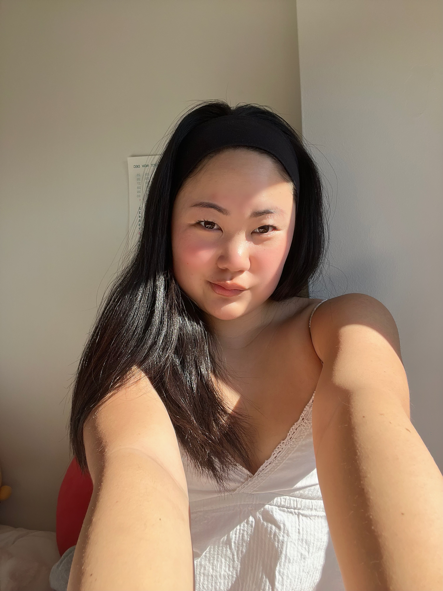

Isabel Yeajin Lee
20 (Libra)
Oct. 18, 2003
Everything You Need To Know About Me
1. I am Korean
2. From a small town in the Bay Area (CA) called Saratoga
3. Was a competative Junior Olympic Synchronized Swimmer
4. Have three siblings and a doodle named Teddy
5. When I was younger I wanted to be a farmer
6. Love cooking & eating, in the future I want to work in food media
7. Speak Spanish, currently learning Korean, want to learn Italian.
8. Favorite colors are pink and yellow
9. Enjoy pilates and yoga
10. I think I am a germaphobe